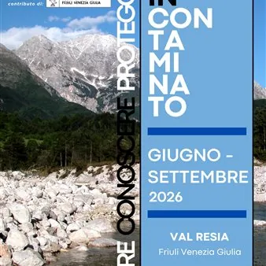

da lun 1 giu a mer 30 set
Festival In-Contaminato 2026
In Val Resia, un festival dedicato all’acqua e alla tutela dei fiumi, con incontri culturali, divulgazione scientifica e attività artistiche ed educative.
 Indicazioni
Indicazioni
- Costi e prenotazioni
- Costo non indicato · Prenotazione non indicata
- Programma
- Programma raccolto. Gli appuntamenti delle diverse schede sono riuniti in questa pagina.
- In caso di maltempo
- Nessuna indicazione specifica pubblicata.
- Note
- Le schede dei singoli appuntamenti sono state unite nella manifestazione principale.
L’EVENTO
Descrizione completa
Nasce “In-Contaminato”: in Val Resia il festival dedicato all’acqua, alla sostenibilità e alla tutela dei fiumi incontaminati
Dal mese di giugno fino a settembre prenderà vita in Val Resia “In-Contaminato – Vivere, Conoscere, Proteggere”, festival di divulgazione umanistica e scientifica dedicato ai temi dell’ambiente, della sostenibilità e della salvaguardia delle risorse naturali. Promosso dall’Associazione Pro Loco Pro “Val Resia” APS, il festival nasce con l’obiettivo di sensibilizzare cittadini, famiglie e nuove generazioni sull’importanza della tutela dell’acqua come bene primario e fondamentale per la vita globale. In un periodo storico in cui i cambiamenti climatici e ambientali rappresentano una delle principali sfide contemporanee, “In-Contaminato” vuole offrire uno spazio di riflessione, confronto e partecipazione attiva attraverso incontri culturali, attività educative e momenti artistici dedicati al rapporto tra uomo e natura.
, propone un calendario di incontri, conferenze, documentari, concerti e attività partecipative con l’obiettivo di valorizzare il patrimonio naturale e culturale della valle, promuovendo una maggiore consapevolezza ambientale.
Gli appuntamenti si svolgeranno sia all’interno che all’esterno, in un contesto naturale di straordinaria bellezza, con ospiti provenienti dal mondo scientifico, culturale e ambientale.
“Acque vive. La Via dei fiumi in Friuli Venezia Giulia”
FESTIVAL “IN-CONTAMINATO – Vivere, Conoscere, Proteggere”
dedicato all’acqua, alla sostenibilità e alla tutela dei fiumi incontaminati
Cinema all’aperto presso l'ex Latteria a San Giorgio di Resia
Wall-e è l'ultimo robot rimasto sulla terra dopo che gli umani l'hanno abbandonata perchè invasa dai rifiuti. Si sono dimenticati di spegnerlo e lui da 700 anni continua a fare quello per cui è stato costruito: comprimere e ammassare rifiuti. E quando dal cielo Arriva un altro robot, Eve, più moderno e programmato per cercare vita sulla Terra, Wall-e lo insegue sull'astronave madre.
FESTIVAL “IN-CONTAMINATO – Vivere, Conoscere, Proteggere” Nell'ambito del Festival “In-Contaminato” dedicato all’acqua, alla sostenibilità e alla tutela dei fiumi incontaminati Disney “Wall-e” Cinema eVento d’estate Cinema all’aperto presso l'ex Latteria a San Giorgio di Resia Sabato 19 settembre alle ore 21.00 Wall-e è l'ultimo robot rimasto sulla terra dopo che gli umani l'hanno abbandonata perchè invasa dai rifiuti. Si sono dimenticati di spegnerlo e lui da 700 anni continua a fare quello per cui è stato costruito: comprimere e ammassare rifiuti. E quando dal cielo Arriva un altro robot, Eve, più moderno e programmato per cercare vita sulla Terra, Wall-e lo insegue sull'astronave madre. SABATO 19 SETTEMBRE ore 20.45 presso l'ex LATTERIA TURNARIA SAN GIORGIO DI RESIA Per informazioni: proloco.provalresia@gmail.com
dedicato all’acqua, alla sostenibilità e alla tutela dei fiumi incontaminati si terrà nella giornata di domenica 20 settembre una mattina all’insegna del divertimento, dedicato alla pulizia del torrente e delle località della Val Resia assieme all’associazione Plastic Free Onlus.
FESTIVAL “IN-CONTAMINATO – Vivere, Conoscere, Proteggere” Nell'ambito del Festival “In-Contaminato” dedicato all’acqua, alla sostenibilità e alla tutela dei fiumi incontaminati si terrà nella giornata di domenica 20 settembre una mattina all’insegna del divertimento, dedicato alla pulizia del torrente e delle località della Val Resia assieme all’associazione Plastic Free Onlus. Aperto a tutti grandi e piccoli DOMENICA 20 SETTEMBRE alle ore 10.00 Per informazioni: proloco.provalresia@gmail.com
Organized by: Associazione Pro Loco "Pro Val Resia" APS
IL PROGRAMMA
Programma e orari
Le singole date appartengono alla stessa manifestazione. Ogni sede verificata dispone delle proprie indicazioni.
Da Lunedì 1 giugno a Mercoledì 30 settembre · FESTIVAL “IN-CONTAMINATO"
Resia · Val Resia
- 5 giugno 18:30 – Libro / Incontro con Cristina Noacco
- 4 luglio 17:00 – Geo-chiacchierata con Corrado Venturini
- 11 luglio 18:00 – Conferenza con Furio Finocchiaro e Mauro Kraus
- 25 luglio 17:00 – Proiezione del documentario di Giulio Squarci
Sabato 19 settembre · FESTIVAL “IN-CONTAMINATO" - DISNEY WALL-E
Resia · Val Resia Ex Latteria San Giorgio
- ore 20.45
Domenica 20 settembre · FESTIVAL “IN-CONTAMINATO" - Giornata di Cleanup
Resia · Val Resia
- FESTIVAL Giornata ecologica
INFORMAZIONI UTILI
Prima di partire
- Controllare la fonte prima di partire.
ORGANIZZAZIONE